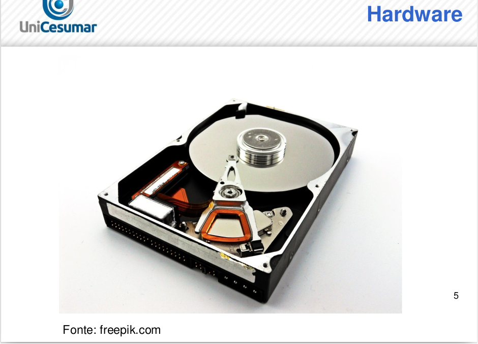
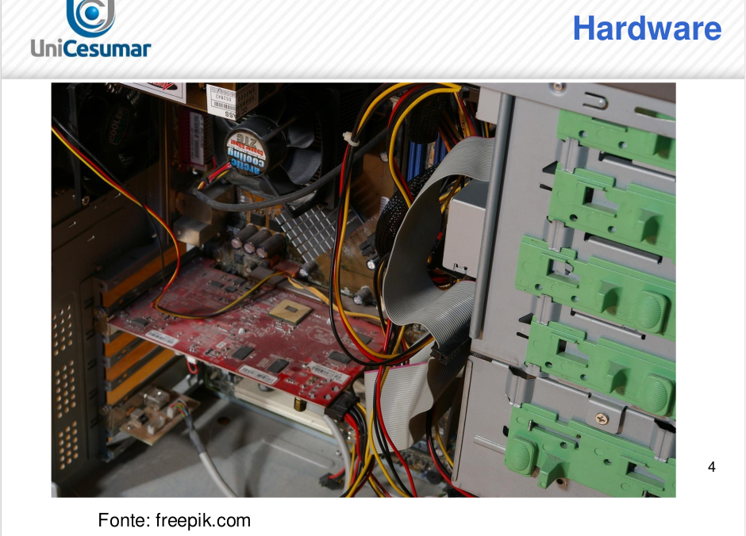
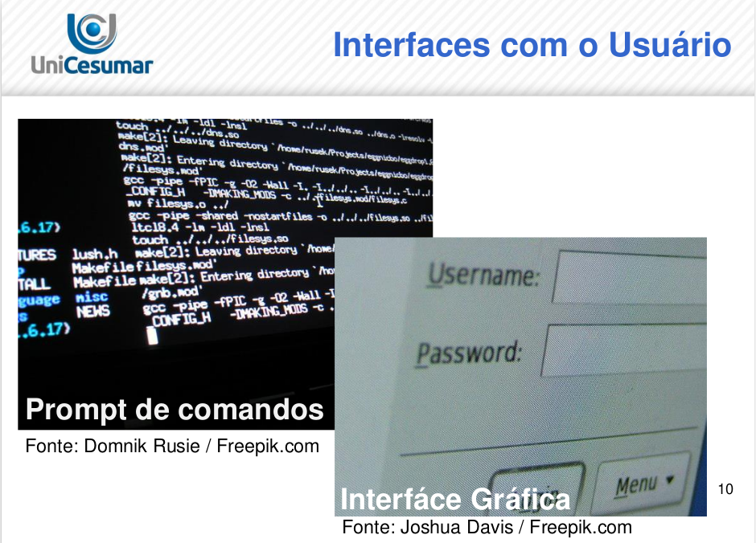
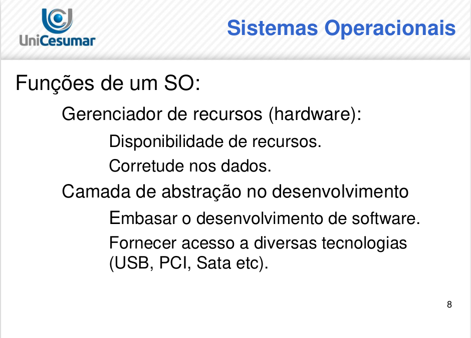
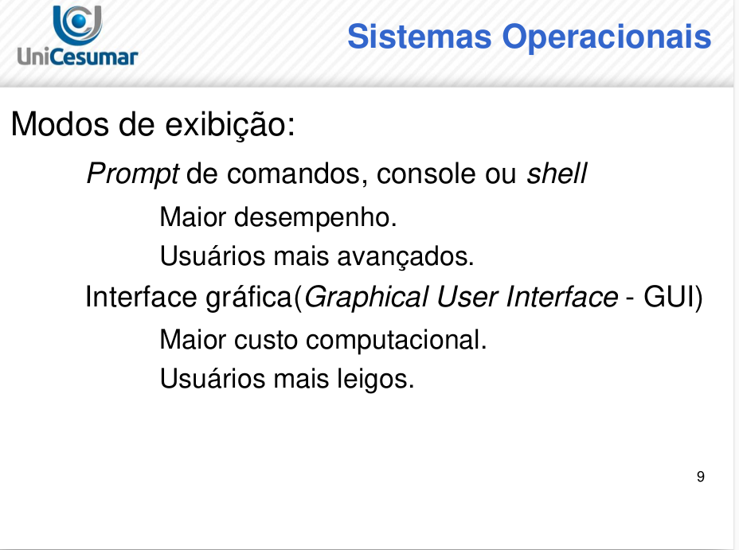

Objetivos de Aprendizagem
- Apresentar conceitos e tipos de sistemas operacionais.
- Apresentar os sistemas operacionais de maior uso e influência.
INTRODUÇÃO
Definição de hardware, software e sistema operacional
Olá, caro(a) aluno(a)! Seja bem-vindo(a) ao estudo dos sistemas operacionais (SO’s).
No video o professor começa falando da importância da disciplina, inicialmente fala a diferença entre software e hardware, como descrito abaixo::
- Hardware:
- parte física do computador. É tudo aquilo que pode ser tocado. Exemplo: teclado, mouse, monitor, gabinete, processador, memória entre outros.
- Software:
- parte lógica do computador. Ao contrário do hardware, esta parte não pode ser tocada. Também chamado de programa ou aplicativo. Exemplo: sistemas operacionais, processadores de textos, arquivos salvos, planilhas eletrônicas entre outros.
Como acabamos de perceber, o sistema operacional é um software. Podemos considerá-lo como o software de maior importância para o bom funcionamento do computador, já que todos os outros aplicativos dependem do sistema operacional para funcionar. O sistema operacional atua na camada chamada modo núcleo, comunicando-se diretamente com o hardware. Os demais softwares atuam na camada modo usuário.
Na foto abaixo temos os hardwares do dispositivo computacional, um HD composto por discos, braços atuadores, em fim, tudo físico e palpável.
Na foto abaixo, você enxerga um gabinete pelo lado de dentro, uma placa conectada a placa mãe, um cooler, fonte da maquina, em fim, tudo hardware.
Na foto abaixo, temos o software, ou ele tem essa cara com interface gráfica, com textos mais coloridos, com caixinhas de edição de texto, como o demonstrado na foto abaixo, no canto inferior direito, ali você tem um software com interface gráfica, também conhecida como GUI. Do lado esquerdo da foto você também pode ter com aquela sopa de letrinhas, aqueles comandos em telinha escura “na maioria das vezes”, é a interface por comandos de textos.
Podemos descrever a função do sistema operacional como:
Não necessariamente um sistema operacional deve possuir interface gráfica com ícones e imagens coloridas. Em algumas situações o uso destas interfaces gráficas pode ser prejudicial ao bom desempenho do hardware, já que exigirá maior poder de processamento e controle do sistema operacional além da utilização de pessoas especializadas. Quando não há interfaces gráficas, utilizamos o termo shell.
- Gerenciar o uso dos componentes (hardware) de um computador, garantindo disponibilidade do hardware e armazenamento correto de dados.
- Fornecer uma camada de abstração para utilização e desenvolvimento de outros softwares.
- Fornecer uma interface de acesso para dispositivos com tecnologias distintas como USB e IDE.
Para o uso doméstico aconselha-se o uso de sistemas operacionais com interfaces gráficas, também chamadas de GUI (Graphical User Interface), já que esta prática torna o uso do computador mais fácil e independente de pessoas especializadas em informática.
Mas, afinal, quando começamos a utilizar sistemas operacionais nos computadores modernos?
Você deve se lembrar das cinco gerações de computadores já estudadas. Na primeira geração (1945-1955) praticamente não tivemos sistemas operacionais, já que boa parte do trabalho realizado era manual, utilizando válvulas e necessitando de muitas pessoas para operá-lo. Podemos citar o ENIAC como exemplo de computador desta geração.
Na segunda geração (1955-1965), devido ao uso de transistores, os computadores tornaram-se mais confiáveis se comparados com as válvulas que geravam muito calor e queimavam facilmente. Nesta geração surgiram os computadores de grande porte, também chamados de mainframes. Muitos deles utilizavam à técnica de cartão perfurado para a inserção de instruções e foram criados pela empresa IBM.
Os principais modelos de mainframes utilizados eram o 7094 e o 1401, ambos da IBM, e os sistemas operacionais mais utilizados eram o FMS (Fortran Monitor System) e o IBSYS, ambos desenvolvidos pela IBM para rodar no 7094. Estes sistemas operacionais são conhecidos como sistemas operacionais em lote (batch) e trabalhavam da seguinte maneira:
- Havia uma entrada de dados, geralmente em cartões perfurados. Cada nova entrada era chamada de job.
- O job era processado, utilizando o máximo do processador e sem executar outra tarefa de leitura ou escrita.
- Após o processamento, os dados resultantes eram escritos em cartões perfurados ou impressos em tela ou em papel.
Com o uso frequente destas máquinas foi percebido que enquanto os dados eram escritos, o processador ficava ocioso. Esta situação foi resolvida, com o uso da técnica de multiprogramação na terceira geração de computadores (1965-1980), ou seja, enquanto uma ação de entrada/saída era realizada, o processador poderia ser usado por outro job e quem deveria gerenciar este uso seria o sistema operacional.
Além desta técnica, outro diferencial nos sistemas operacionais para computadores da terceira geração foi o uso da técnica SPOOL (Simultaneous Peripheral Operation On Line) e TIMESHARING.
O spool consiste em permitir que o processamento de um job fosse iniciado automaticamente quando outro job fosse finalizado. Cabe ao sistema operacional gerenciar o início da execução destes jobs.
O timesharing permitia que cada usuário pudesse se conectar por meio de um terminal on-line. Caso um usuário conectado não tivesse utilizando recursos do hardware, o mesmo era alocado para os usuários que estavam utilizando estes recursos, com isto permitia melhor tempo de resposta para processamento.
Podemos citar como exemplos de sistemas operacionais desta geração:
- IBM OS/360, que era utilizado nos computadores modelo IBM 360.
- UNIX, tornou-se muito popular no mundo acadêmico, em agências governamentais e em empresas.